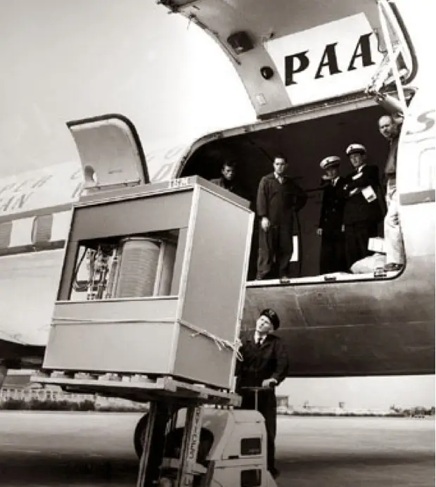

1.1 Technology and the Modern Enterprise
How Information Systems Drive Modern Enterprise Strategy
The Tectonic Shifts of Modern Enterprise
In late December 2022, a brutal winter freeze swept across the United States, bringing extreme cold, heavy snow, and high winds at the peak of the holiday travel season[1]. Every commercial airline scrambled to adjust, yet almost all of them managed to recover their footing within a matter of hours[2]. United Airlines, for example, canceled approximately 36% of its flights during the worst of the storm but still managed to get 90% of its passengers to their destinations within four hours of their scheduled times[2].
At Southwest Airlines, however, the operational situation disintegrated into the costliest scheduling meltdown in the history of commercial aviation[1]. Over the course of ten days, Southwest canceled more than 16,900 flights, leaving over two million passengers stranded in airport terminals. The financial toll was staggering, ultimately costing the company between $1.1 billion and $1.2 billion in lost revenues, passenger reimbursements, and a record-setting $140 million civil penalty from the U.S. Department of Transportation.
The root cause of this historic operational failure was not the weather[1]. Instead, it was the collapse of Southwest's internal information systems under the weight of decades of accumulated technical debt[2]. While Southwest had grown into the third-largest domestic carrier in the United States, its technological infrastructure had failed to keep pace with its expansion[1]. The airline’s crew scheduling system, a legacy software program called SkySolver, was designed to optimize crew reassignments during standard, localized disruptions[3].
However, because Southwest operates a point-to-point network rather than a hub-and-spoke system, a single delay cascades across a long, linear chain of flights. When the winter storm hit, the scheduling software could not handle the sheer volume of changes[7]. The system’s database became entirely decoupled from physical reality—essentially losing track of where pilots and flight attendants were located[1].
Because the software lacked real-time, automated updates, the airline was forced to revert to manual phone coordination[4]. Schedulers had to comb through spreadsheets and field individual phone calls from thousands of idle pilots and flight attendants[5]. The phone lines jammed completely, forcing crew members to wait on hold for up to nine hours just to report their status[2].
The physical assets—the aircraft and the crews—were fully available, but the digital brain that coordinated them had fractured[6]. This structural failure demonstrates a fundamental rule of the modern business landscape: operational excellence is entirely dependent on the strength, scalability, and design of an organization's information systems[2].
| Operational Metric | Southwest Airlines | Peer Carriers (Average) |
|---|---|---|
| Cancellations during Crisis | Over 16,900 flights (60%+ of schedule on peak days) | Rapid recovery within 24-48 hours of storm passage |
| Primary Failure Mechanism | SkySolver database decoupling, manual phone coordination | Automated hub-and-spoke crew recovery systems |
| Crew Status Wait Times | Up to 9 hours on hold via analog voice lines | Digital self-service check-in and automated reassignment |
| Total Financial Loss | $1.1 Billion – $1.2 Billion | Minor seasonal earnings impact |
| Regulatory Civil Penalty | $140 Million (largest in DOT history) | $0 |
In sharp contrast to this cautionary tale sits the strategic turnaround of Domino’s Pizza. In 2008, Domino’s was facing an existential brand crisis[9]. Consumer sentiment had hit an all-time low; focus groups routinely compared the company's product to "cardboard," and employees posted viral videos exposing unsanitary kitchen conditions[9]. The company's stock price hovered under $10 per share[8].
Under the leadership of Chief Executive Officer Patrick Doyle and Chief Digital Officer Dennis Maloney, Domino’s launched a dual-pronged recovery plan[8]. First, the company publicly admitted its culinary failures, completely reformulated its core recipes, and invited the public to watch the transformation in real time[8].
Second, and more importantly, Domino's transformed its identity. The executive team recognized that in a convenience-driven market, digital interactions were the primary driver of customer loyalty[9]. Domino's began operating like a Silicon Valley software house rather than a quick-service restaurant chain, declaring itself "a technology company that delivers pizza"[10].
Domino's invested heavily in custom digital platforms, bypassing third-party delivery aggregators to maintain direct ownership of its customer data. The company introduced the "Pizza Tracker" to give consumers real-time transparency into kitchen operations and developed the "Anyware" platform[8]. Anyware allowed consumers to order food seamlessly from smartwatches, Amazon Alexa, Apple CarPlay, or even by texting a single pizza emoji[11].
Behind the scenes, the firm deployed predictive analytics and artificial intelligence to optimize logistics, automate inventory, and refine delivery routes[9].
The results were unprecedented. Same-store sales surged, and the brand permanently repositioned itself as a premium technology and quality leader. By 2017, Domino's stock price had risen from under $10 to over $400, outperforming tech giants like Apple, Amazon, Google, and the rest of the FAANG cohort over that same ten-year window[8].
The lesson is clear: information systems are not merely administrative tools to be managed by an isolated IT department[10]. When properly aligned with business strategy, they are the single most powerful driver of competitive advantage, operational agility, and long-term enterprise value[4].
The Southwest and Domino's examples show two sides of enterprise technology: systems can become a liability when neglected or a source of advantage when aligned with strategy. The next question is why the market increasingly rewards firms that treat software, data, and platforms as central assets.
The Tech-Driven Economy: Why the World's Biggest Firms Are Now Tech Companies
Step inside the cab of a modern John Deere tractor, and you are not just looking at diesel power and heavy steel. You are stepping into a high-performance supercomputer on wheels.
Equipped with high-resolution cameras, edge-computing processors, and advanced computer vision algorithms, Deere’s "See & Spray" technology can differentiate between target crops and invasive weeds in milliseconds, precision-spraying herbicide only where needed[12]. Deere is no longer just a machinery company; it is an advanced AI and software engineering powerhouse. The company has publicly committed to generating 10 percent of its annual revenue from recurring software subscriptions by 2030[13].
This transformation illustrates a fundamental shift in modern commerce: technology is no longer a back-office utility designed to automate routine paperwork. Information technology (IT) has become the primary engine of corporate strategy, market valuation, and global economic expansion[14].
The Great Economic Realignment
To appreciate how thoroughly technology has rewritten the rules of global business, consider how the world’s leaderboard of corporate value has shifted over the past quarter-century.
At the turn of the millennium, the most valuable public companies measured by market capitalization—the total dollar value of a firm’s outstanding shares of stock—were industrial conglomerates, oil producers, and traditional brick-and-mortar retailers[15]. General Electric, ExxonMobil, and Walmart set the pace for business scale[16].
| Rank | Top Companies by Market Cap (Jan 2000) | Top Companies by Market Cap (Recent Period) | Core Drivers of Modern Valuation |
|---|---|---|---|
| 1 | Microsoft ($606B)[16] | Nvidia ($4.5T – $5.0T+)[17] | AI infrastructure, GPU accelerators, parallel computing stack[15] |
| 2 | General Electric ($508B)[16] | Apple ($4.0T – $4.8T)[17] | Integrated hardware platforms, consumer ecosystem, services[15] |
| 3 | NTT Docomo ($367B)[16] | Alphabet / Google ($3.8T – $4.2T)[17] | Search, digital advertising networks, cloud computing, AI platforms[15] |
| 4 | Cisco Systems ($352B)[16] | Microsoft ($2.9T – $3.8T)[17] | Enterprise cloud infrastructure (Azure), SaaS tools, AI models[15] |
| 5 | Walmart ($302B)[16] | Amazon ($2.3T – $2.7T)[17] | E-commerce infrastructure, cloud computing (AWS), platform logistics[15] |
Today, technology powerhouses dominate the top rankings[17]. Hardware manufacturers like Nvidia, cloud providers like Microsoft and Alphabet, consumer ecosystem leaders like Apple, and digital logistics platforms like Amazon routinely command multi-trillion-dollar valuations[15].
Figure 1.1a The Evolution of Corporate Value

Source: author-created adaptation.
Show long description
The figure is titled “The Evolution of Corporate Value” and is arranged as a two-part comparison on a white background. The top half is labeled “Traditional Industrial Model.” It shows a left-to-right sequence of four rounded boxes connected by arrows: “Heavy Capital Requirements,” “Physical Assets,” “Linear Growth,” and “One-Time Sales.” This top row presents the idea that value in the industrial model depends on large up-front investment in physical resources and tends to grow more slowly and linearly.
A downward arrow in the center marks a shift toward a different model. The bottom half is labeled “Digital Platform Model.” It also shows four rounded boxes connected by arrows from left to right: “Software Infrastructure,” “Data Loops,” “Exponential Scale,” and “Recurring Subscriptions.” This bottom row shows that value in the platform model comes from software, data feedback, and the ability to scale quickly while earning recurring revenue.
A brief note near the bottom states that digital platforms can create value through software, data feedback loops, and recurring revenue. The overall purpose of the figure is to contrast a traditional asset-heavy business model with a digital platform model driven by feedback and scale.
Why Software Models Scale: Margins, Networks, and Subscriptions
Why have financial markets revalued technology enterprises so dramatically over traditional firms? The answer lies in the fundamental economics of digital businesses[13].
Traditional manufacturing and brick-and-mortar retail businesses face significant physical friction[13]. To double its revenue, a traditional retailer must construct new stores, hire store associates, and stock physical inventory[13]. This creates high marginal costs—the cost required to produce one additional unit of a product or service.
Software and digital platforms operate under very different economic rules[13]:
- Near-Zero Marginal Costs: Once a software application or digital service is built, the cost of serving the ten-thousandth user is virtually identical to serving the first[13].
- High Gross Margins: Software businesses frequently operate at gross margins of 70 to 80 percent or higher, whereas physical retail and manufacturing margins are often constrained to single digits or low double digits.
- Predictable Recurring Revenue: Through Software-as-a-Service (SaaS) delivery models, companies replace volatile, one-time sales cycles with stable, predictable subscription revenue streams[13].
- Network Effects: Modern tech firms build platform ecosystems where a platform becomes exponentially more valuable to users as more people use it and more third-party developers build for it[12].
Through digital transformation, non-tech companies are embedding these software mechanics into physical products[12]. When John Deere attaches subscription software to a physical tractor, it converts a low-margin hardware transaction into a high-margin, recurring software relationship[12].
IT in the Macroeconomy: Measuring the Digital GDP Engine
The dominant position of tech companies on Wall Street mirrors their expansion across global GDP.
Data from the U.S. Bureau of Economic Analysis (BEA) indicates that the digital economy generates over $2.6 trillion in value added, accounting for more than 10 percent of total U.S. Gross Domestic Product. Over the past decade, the digital economy has expanded at more than triple the annual compound growth rate of the broader economy[14].
To support this digital backbone, enterprise technology expenditures have scaled rapidly. According to market forecasts by Gartner, worldwide annual IT spending has surpassed $6.3 trillion[18].
| IT Spending Sector | Projected Global Volume | Core Operational Investments |
|---|---|---|
| IT Services | ~$1.87 Trillion[18] | Cloud integration, managed security, enterprise digital transformation[18] |
| Software | ~$1.44 Trillion[18] | Enterprise SaaS suites, analytics platforms, AI developer tools[18] |
| Communications Services | ~$1.36 Trillion[18] | Enterprise networking, 5G connectivity, cloud data backbones[18] |
| Devices | ~$856 Billion[18] | AI-optimized workstations, enterprise mobility hardware, tablet fleets[18] |
| Data Center Systems | ~$788+ Billion[18] | Hyperscale cloud builds, specialized AI server racks, advanced high-bandwidth memory[18] |
For managers across any industry, these figures demonstrate that technology decisions directly govern cost structures, operational capabilities, and market competitiveness[12].
The Artificial Intelligence Catalyst
The arrival of artificial intelligence (AI) has accelerated the reallocation of enterprise capital toward technology[18]. AI represents an infrastructure super-cycle that is reshaping the modern technology stack[15].
To run generative AI applications, organizations require massive computational capacity. This demand drove Nvidia's ascent into the top ranks of global corporate market capitalization, as enterprise cloud providers raced to secure state-of-the-art AI accelerator chips[15]. Gartner reports that global spending on data center systems has experienced historic surge rates over 50 percent year-over-year as technology providers construct dedicated AI infrastructure[18].
Figure 1.1b The Enterprise AI Tech Stack

Source: author
Show long description
The diagram is a vertical three-layer stack titled “THE ENTERPRISE AI TECH STACK.”
From top to bottom the layers are:
Application Layer (light blue) – contains AI Copilots, Autonomous Agents, and Domain-Specific SaaS Tools.
Model Platform Layer (light green) – contains Domain-Specific Language Models (DSLMs) and Fine-Tuned LLMs.
Infrastructure Layer (light orange) – contains GPU Clusters, Hyperscale Data Centers, and High-Bandwidth Memory.
Each layer is a rounded rectangle with a bold header and a short list of components. The layers sit directly above one another, visually representing a technology stack in which the lower layers support the upper layers.
As enterprise AI strategies mature, business spending is evolving through two key trends:
- Rise of Domain-Specific Models: While massive foundational models laid the groundwork for generative AI, enterprise buyers are increasingly deploying domain-specific language models (DSLMs)[19]. These specialized models are trained on focused industry datasets, offering faster processing times, enhanced data security, lower operating costs, and reduced risk of hallucinations[19]. Gartner projects spending on specialized models and DSLMs to grow by over 200 percent annually[19].
- Focus on ROI and Cost Control: Chief Information Officers (CIOs) are prioritizing usage efficiency, cost transparency, and measurable business performance over speculative pilot projects[19]. Rather than buying disconnected standalone AI applications, companies favor enterprise vendors that embed AI capabilities directly into existing operational software workflows[19].
Those software economics rest on a deeper technical engine: the long-term decline in the cost of computing. Moore's Law helps explain why capabilities that once seemed experimental become cheap, fast, and widespread enough to reshape competitive expectations.
Fast, Cheap, and Ubiquitous: The Strategic Dynamics of Moore’s Law
The Silicon Paradox: Why Yesterday’s Magic Is Today’s Commodity
Imagine running a business in which your most important input doubles in power every two years while its price stays roughly flat—or, put the other way around, the equipment you buy today will deliver only half the performance per dollar of the model that arrives 24 months from now.[21]
In almost any traditional industry such a pattern would create chaos. Car engines do not double their efficiency on a reliable schedule; steel mills do not halve production costs every two years. Yet in the digital economy this relentless improvement is the normal expectation. It is the reason the phone in your pocket contains millions of times more computing power than the mainframes that guided Apollo astronauts to the Moon, at a tiny fraction of the cost.
This phenomenon is known as Moore’s Law. For managers it is far more than a technical curiosity. It is a fundamental economic force that shortens product life cycles, disrupts established business models, forces difficult capital-allocation choices, and makes entirely new industries—from cloud computing to generative AI—economically feasible.[21]
What Moore’s Law Actually Says
In 1965 Gordon Moore, then at Fairchild Semiconductor and later a co-founder of Intel, observed that the number of components that could be placed on a single microchip was doubling roughly every year while the cost per component fell sharply. In 1975 he revised the forecast to a doubling approximately every two years.[21] The prediction became both an empirical observation and a self-fulfilling industry roadmap: chip makers, equipment suppliers, and customers all planned around the two-year cadence.
Moore’s Law is not a law of physics. It is an engineering and economic trajectory that the semiconductor industry has largely sustained for more than five decades. The practical result for business is simple and powerful: computing capability keeps getting dramatically cheaper and more abundant.
Why Managers Should Care
The consequences for strategy are direct:
- Product life cycles compress. A capability that is expensive and experimental today can become cheap and ubiquitous in a few product generations. Companies that treat technology as a one-time purchase rather than a continuously improving resource quickly fall behind.
- Business models are rewritten. Near-zero marginal cost of digital goods, combined with ever-cheaper processing, storage, and bandwidth, underpins software-as-a-service, platform businesses, and data-driven services. Physical products can be turned into recurring-revenue platforms once sensors and software become inexpensive enough (the John Deere example earlier in the chapter is a case in point).
- Capital allocation must be dynamic. Investments in systems, data, and talent need to be revisited regularly because the underlying cost/performance curve keeps moving. What looks like over-investment today can look like under-investment two years later.
- New industries become possible. Cloud computing, large-scale machine learning, real-time logistics optimization, and many other sectors exist only because the cost of the required computation has fallen far enough.
Related Trends That Amplify the Effect
Moore’s Law does not operate in isolation. Two companion observations matter for managers:
- Kryder’s Law – storage density has improved even faster than transistor density, driving the cost of storing data toward zero.[29]
- Gilder’s Law – network bandwidth has expanded rapidly, making high-speed communication increasingly inexpensive.[29]
Together, cheap processing, cheap storage, and cheap connectivity create the technical foundation for modern digital business models.[21]
Figure 1.1c 5MB Hard-drive loaded onto a plane in 1956.

Source:
Show long description
This is a black-and-white historical photograph showing a large, box-shaped electronic computer or data-processing machine being loaded into the cargo door of a Pan American Airways (PAA) propeller aircraft.
The machine sits on a raised industrial lift (labeled “CLARK”) in the foreground. It is a tall, rectangular metal cabinet with a transparent or open front section revealing internal components, including a large circular drum or reel and visible wiring. The unit is secured with straps.
A uniformed ground crew member wearing a peaked cap stands beside the lift, looking upward at the equipment.
In the open cargo doorway of the aircraft, five men stand looking out: three appear to be in work clothing or coveralls, and two wear airline uniforms with peaked caps (likely flight crew). The aircraft fuselage is marked “PAA” near the top of the door.
The scene takes place on an outdoor airfield under bright daylight. The overall composition documents the mid-20th-century air transport of early mainframe or specialized computing equipment.
A Note on Limits and the AI Era
Moore’s Law has faced physical and economic headwinds in recent years (power density, manufacturing complexity, and the enormous capital cost of leading-edge factories). At the same time, demand for computing power from frontier AI models has grown much faster than the historical Moore’s Law cadence.[28] The industry has responded with specialized accelerators, advanced packaging, and massive data-center build-outs. The strategic implication remains the same: the cost of useful computation continues to fall, but the path is no longer a smooth, predictable doubling every two years. Managers must watch both the long-term trend and the short-term bottlenecks (chip supply, power, and cooling) that can constrain AI-scale deployments.
In short, Moore’s Law and its relatives turn technology from a scarce resource into an increasingly abundant one. Organizations that understand this dynamic—and that continually redesign products, processes, and business models around it—gain a lasting advantage. Those that treat computing power as static quickly discover that yesterday’s cutting-edge system has become today’s commodity.
| Metric / Dimension | Traditional General Computing Era | Frontier Artificial Intelligence Era |
|---|---|---|
| Primary Workload | Sequential logic, databases, web applications[21]. | Large-scale parallel matrix multiplication and tensor operations[26]. |
| Compute Doubling Cadence | ~20 to 24 months (Moore's Law baseline)[21]. | ~5 to 6 months (Frontier AI training compute)[28]. |
| Dominant Hardware Unit | Central Processing Unit (CPU)[27]. | Graphics Processing Unit (GPU) and Tensor Accelerators[26]. |
| Manufacturing Bottleneck | Raw lithographic transistor density[21]. | Advanced Packaging capacity (e.g., TSMC CoWoS) and HBM memory[26]. |
| Primary System Limit | Clock speed and thermal heat dissipation[22]. | "Memory wall" bandwidth, grid electrical power, data center cooling[25]. |
Key Takeaways
The dominant positions held by technology giants demonstrate that competitive advantage in the modern economy belongs to software-driven business models[12].
Whether leading a hospital network, managing a supply chain, or manufacturing industrial equipment, future business leaders must learn to leverage data assets, deploy cloud platforms, and integrate AI capabilities into everyday operations[12]. Technology is no longer merely a tool for supporting business strategy—technology is business strategy.
Across the full section, the common thread is managerial: modern enterprises compete through the quality of their digital systems, the economics of software platforms, and the hardware advances that make new information-intensive business models possible.
Key Terms and Definitions
- Technical Debt
- Technical debt is when you borrow against the future by choosing the fastest solution or less-than-ideal today, then keep paying interest in the form of extra work, risk, and slower progress until you finally refinance (rebuild) it. For example: a small company quickly builds its core order and inventory system in a messy Excel spreadsheet that works at first, but as the business grows the fragile formulas break, conflicting versions multiply, and data becomes unreliable—because Excel simply wasn’t built to handle multi-user, high-volume operational data at scale.
- Digital Transformation
- The integration of digital technology across all business domains, fundamentally changing how an enterprise operates, creates value, and competes[12].
- Software-as-a-Service (SaaS)
- A cloud software distribution model where applications are hosted centrally and accessed via recurring subscriptions, providing high gross margins and predictable cash flows[13].
- Platform Ecosystem
- A multi-sided business model that creates value by facilitating interactions between independent user groups, leveraging network effects to build strategic entry barriers[12].
- Domain-Specific Language Model (DSLM)
- An AI language model fine-tuned on targeted domain data, offering improved accuracy, reduced latency, and lower compute costs for specific business tasks[19].
- Technology Business Management (TBM)
- A business management framework that categorizes technology investments into digital product portfolios, enabling accurate total-cost-of-ownership (TCO) tracking and governance[20].
- Moore’s Law
- The empirical observation that the number of transistors on a microchip doubles roughly every two years, driving exponential gains in computing performance at falling relative costs[21].
- Transistor
- A microscopic semiconductor switch etched onto silicon that regulates electric current, serving as the foundational logic unit of digital computing[21].
- Semiconductor
- A material (typically silicon) whose electrical conductivity can be controlled, enabling the creation of integrated circuits[21].
- Integrated Circuit (IC)
- A thin chip of semiconductive material containing millions or billions of interconnected transistors, resistors, and electronic components[21].
- Dennard Scaling
- The historical principle stating that as transistors grow smaller, power density remains constant, allowing clock speeds to increase without overheating; broke down in the mid-2000s[21].
- Rock’s Law (Moore’s Second Law)
- The economic observation that the capital expenditure required to build a leading-edge semiconductor fabrication plant doubles roughly every four years[22].
- Fab (Fabrication Facility)
- An ultra-clean, capital-intensive manufacturing factory where integrated circuits are etched onto silicon wafers[22].
- Fabless / Foundry Model
- An industry structure separating chip architecture/design (fabless firms) from physical wafer manufacturing (pure-play foundries)[24].
- System-on-Chip (SoC)
- An integrated circuit architecture that combines all core computing units—CPU, GPU, memory controller, and AI engines—onto a single package[27].
- Advanced Packaging (CoWoS)
- Manufacturing methodologies (such as TSMC's Chip-on-Wafer-on-Substrate) that connect and stack multiple logic and memory dies using silicon interposers[26].
Footnotes
- 2022 Southwest Airlines scheduling crisis - Wikipedia, https://en.wikipedia.org/wiki/2022_Southwest_Airlines_scheduling_crisis Back to text
- The Southwest Airlines Winter Meltdown Case studies on risk, technical debt, operations, passengers, regulators, revenue, and brand - ERIC, https://files.eric.ed.gov/fulltext/EJ1448977.pdf Back to text
- Lessons from the Runway: How Southwest's System Crash Illuminates Healthcare's Technical Debt Problem | UCSF Synapse, https://synapse.ucsf.edu/articles/2025/02/18/lessons-runway-how-southwests-system-crash-illuminates-healthcares-technical Back to text
- Factors Influencing Southwest Airlines' Operational Failures (2022-23): Lessons from Corporate Strategy and Frontline Employees, https://commons.erau.edu/cgi/viewcontent.cgi?article=1595&context=db-srs Back to text
- Report 2357 - AI Incident Database, https://incidentdatabase.ai/reports/2357/ Back to text
- Southwest Airlines Lost Track of Its Own Pilots. That's When I Knew Chatbots Wouldn't Save Logistics. - Medium, https://medium.com/@ashutosh_veriprajna/southwest-airlines-lost-track-of-its-own-pilots-4fb4669a12a0 Back to text
- TIL: During the Christmas/NYE holiday season of 2022, a winter storm caused Southwest Airlines' (ancient) crew scheduling software to break down, stranding crew members and cancelling 50% of flights between 21-30 December. Losses were reportedly between $1.1 billion to over $1.2 billion. : r/todayilearned - Reddit, https://www.reddit.com/r/todayilearned/comments/1n992qx/til_during_the_christmasnye_holiday_season_of/ Back to text
- How Domino's “Pizza Turnaround” Became a Masterclass in Food PR - Everything-PR, https://everything-pr.com/how-dominos-pizza-turnaround-became-a-masterclass-in-food-pr Back to text
- How Domino's Reinvented Itself from a Pizza Punchline to a Tech-Driven Delivery Leader, https://www.chiefreinventionofficer.com/blog-page/how-dominos-reinvented-itself-from-a-pizza-punchline-to-a-tech-driven-delivery-leader Back to text
- Digital Ecosystem and its opportunities ADDRESS by Venkateshawaran, https://sidtm.edu.in/wp-content/uploads/2025/05/June-23-to-May-24Workshop-2.pdf Back to text
- Inside the 'AnyWare' digital strategy at Domino's Pizza - InnoLead - Innovation Leader, https://www.innovationleader.com/food-and-beverage/inside-the-anyware-digital-strategy-at-dominos-pizza/ Back to text
- The strategic transformation of John Deere: Precision Agriculture, AI, and the Internet of Things - HBR Store, https://store.hbr.org/product/the-strategic-transformation-of-john-deere-precision-agriculture-ai-and-the-internet-of-things/TB0702 Back to text
- How SaaS & Subscriptions are Transforming Farming with John Deere's Justin Rose, https://robbiekellmanbaxter.com/blog/how-saas-subscriptions-are-transforming-farming-with-john-deeres-justin-rose/ Back to text
- New and Revised Statistics of the U.S. Digital Economy, 2005–2021 - Bureau of Economic Analysis, https://www.bea.gov/sites/default/files/2022-11/new-and-revised-statistics-of-the-us-digital-economy-2005-2021.pdf Back to text
- The Magnificent Seven: U.S. Big Tech Market Cap Boom (2000–Q3 2025) - Voronoi, https://www.voronoiapp.com/markets/-The-Magnificent-Seven-US-Big-Tech-Market-Cap-Boom-2000Q3-2025-1612 Back to text
- Animation: The Largest Public Companies by Market Cap (2000–2022) - Visual Capitalist, https://www.visualcapitalist.com/cp/largest-companies-from-2000-to-2022/ Back to text
- Largest Companies by Market Cap in 2026 - AlphaSense, https://www.alpha-sense.com/largest-companies-by-market-cap/ Back to text
- Gartner Forecasts Worldwide IT Spending to Grow 13.5% in 2026, Totaling $6.31 Trillion, https://www.gartner.com/en/newsroom/press-releases/2026-04-22-gartner-forecasts-worldwide-it-spending-to-grow-13-point-5-percent-in-2026-totaling-6-point-31-trillion-dollars Back to text
- Gartner predicts AI models and platforms spend to hit US$64B, https://www.arnnet.com.au/article/4199047/gartner-predicts-ai-models-and-platforms-spend-to-hit-us64b.html Back to text
- How TBM & Product Costing Helped John Deere Accelerate their Agile Transformation, https://www.tbmcouncil.org/case-studies/how-tbm-product-costing-helped-john-deere-accelerate-their-agile-transformation/ Back to text
- Moore's law - Wikipedia, https://en.wikipedia.org/wiki/Moore%27s_law Back to text
- Moore's law - Grokipedia, https://grokipedia.com/page/Moore's_law Back to text
- After Silicon: The Technologies That Will Power the Next Era of Computing | by Talal Ahmad, https://medium.com/@talalahm2d/after-silicon-the-technologies-that-will-power-the-next-era-of-computing-11a67b1802bc Back to text
- (PDF) From Moore's Law to Market Rivalry: The Economic Forces That Shape the Semiconductor Manufacturing Industry - ResearchGate, https://www.researchgate.net/publication/397590357_From_Moore's_Law_to_Market_Rivalry_The_Economic_Forces_That_Shape_the_Semiconductor_Manufacturing_Industry Back to text
- Nvidia's 4-Die Rubin Ultra Reportedly Axed; Packaging Bottleneck Threatens AI Dominance, https://finance.biggo.com/news/b9bad30f-22c0-430a-bf2a-4704afd64f68 Back to text
- The Rubin Era: NVIDIA's Strategic Stranglehold on Advanced Packaging Redefines the AI Arms Race - Markets & Stocks, https://markets.chroniclejournal.com/chroniclejournal/article/tokenring-2026-1-27-the-rubin-era-nvidias-strategic-stranglehold-on-advanced-packaging-redefines-the-ai-arms-race Back to text
- Apple silicon - Wikipedia, https://en.wikipedia.org/wiki/Apple_silicon Back to text
- The AI Compute Pyramid: Why Capital Gates Access, https://axecompute.com/ai-compute-pyramid/ Back to text
- Re-Thinking Crisis in the Digital Economy: A Contemporary Case Study of the Phonographic Industries in Ireland - DORAS | DCU Research Repository, https://doras.dcu.ie/15700/1/J._Rogers_-__PhD_Thesis.pdf Back to text
- Compute trends across three eras of machine learning - Epoch AI, https://epoch.ai/publications/compute-trends Back to text